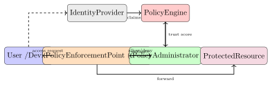

Chapter 25: Security Architecture and Design¶
Security architecture translates abstract security requirements into concrete, implementable system designs. A well-designed architecture reduces the attack surface, limits the blast radius of any single compromise, and provides the visibility needed for detection and response.
This chapter moves from theoretical frameworks through practical controls and into the compliance requirements that often drive real procurement and design decisions.
25.1 Security Architecture Frameworks¶
-
SABSA (Sherwood Applied Business Security Architecture) — A risk-driven, business-aligned framework with six layers: Contextual, Conceptual, Logical, Physical, Component, and Operational. Each layer answers the questions Who, What, Where, When, Why, and How for security.
-
TOGAF with Security Overlay — The Open Group Architecture Framework provides a generic enterprise architecture methodology; the Security Architecture domain extends it with threat and risk analysis at each ADM phase.
-
O-ESA (Open Enterprise Security Architecture) — An open standard from The Open Group focused on the logical and physical security architecture components: security services, security domains, and trust relationships.
25.2 Defence in Depth¶
Definition 25.1 (Defence in Depth)
Defence in depth is a layered security strategy in which multiple independent security controls protect an asset. The failure of any single control does not result in a complete compromise.
Each layer is implemented with different control types and technologies:
-
Physical: Fences, guards, badge readers, CCTV.
-
Network: Firewall, IDS/IPS, VPN, network segmentation.
-
Host: EDR, patch management, host-based firewall, disk encryption.
-
Application: Input validation, WAF, SAST/DAST, secure SDLC.
-
Data: Encryption at rest and in transit, DLP, access control lists.
25.3 Zero Trust Architecture¶
Definition 25.2 (Zero Trust Architecture)
Zero Trust Architecture (ZTA), defined in NIST SP 800-207, treats every network location as potentially hostile. Access decisions are made dynamically based on identity, device posture, and contextual signals rather than network perimeter location.
25.3.1 NIST SP 800-207 Seven Tenets¶
-
All data sources and computing services are considered resources.
-
All communication is secured regardless of network location.
-
Access to resources is granted on a per-session basis.
-
Resource access is determined by dynamic policy.
-
The enterprise monitors and measures the integrity of all owned assets.
-
All resource authentication and authorisation are dynamic and strictly enforced before access is granted.
-
The enterprise collects information about the state of assets, network infrastructure, and communications to improve its security posture.
25.3.2 Zero Trust Components¶

- Identity Provider (IdP)
- Issues verified claims about user and device identity. Examples: Okta, Azure Active Directory, Google Workspace.
- Policy Engine (PE)
- Evaluates trust score based on identity claims, device health (MDM compliance, patch level, EDR status), and contextual signals (geolocation, time, behavioural baseline).
- Policy Administrator (PA)
- Translates the PE decision into a session token or access credential.
- Policy Enforcement Point (PEP)
- Proxies or brokers traffic; enforces the PE allow/deny decision. Examples: Cloud-based reverse proxy, ZTNA agent.
BeyondCorp: Google’s Zero Trust Implementation
Google’s BeyondCorp model (2014–) moved access control from VPN-based perimeter to device and user verification. The core insight: the corporate network is as untrusted as the public internet. Employee laptops must present a device certificate (managed by Google’s CA) and user identity token to the Access Proxy before reaching any internal service.
25.4 Network Segmentation¶
- VLANs
- Layer-2 segmentation; limits broadcast domains but does not prevent routed traffic unless combined with inter-VLAN ACLs.
- DMZ Architecture
- A perimeter network hosting publicly accessible services (web, email) behind an outer firewall; an inner firewall separates the DMZ from the internal network.
- Micro-segmentation
- Software-defined segmentation at the workload level; each VM or container has its own firewall policy.
- Service Mesh (Istio mTLS)
- Transparent mutual-TLS between microservices; every service has a certificate from a mesh CA; east-west traffic is authenticated and encrypted.
25.4.1 Microsegmentation in Practice¶
A traditional data centre relies on VLANs and perimeter firewalls to separate network zones, but once an attacker compromises a single host inside a VLAN, east-west traffic—server-to-server communication within the same network tier—flows freely. This flat internal network is the reason that ransomware can encrypt thousands of servers after a single workstation is compromised: the ransomware spreads laterally via SMB (port 445) or WMI with no firewall between servers in the same VLAN.
Microsegmentation replaces VLAN-based controls with workload-based policies. Instead of assigning a firewall rule to a subnet, you assign it to a workload identity—a VM tag, container label, or process signature. The policy is: “the payment-service workload may communicate with the postgres-primary workload on port 5432, and nothing else.” Any other connection—whether from a compromised adjacent workload or from the workload itself trying to reach the internet—is blocked by default.
Implementation options:
-
VMware NSX enforces distributed firewall rules at the hypervisor level; policy follows the VM regardless of which physical host or VLAN it migrates to. NSX’s distributed firewall processes traffic before it exits the virtual NIC, so there’s no traffic path that bypasses it.
-
Illumio Core installs a lightweight agent on each workload (physical server, VM, or container) that enforces allow-list policies locally and reports telemetry to a central Policy Compute Engine. Because policy enforcement is at the host, it works across heterogeneous environments—on-premises bare metal, cloud VMs, and containers in the same policy domain.
-
Cisco Tetration (now Cisco Secure Workload) uses network flow telemetry and machine learning to generate proposed segmentation policies based on observed communication patterns before enforcement is turned on—a critical feature for brownfield deployments where unknown dependencies would otherwise cause policy-induced outages.
The operational challenge of microsegmentation is the discovery phase: mapping every legitimate communication path before writing a deny-all default rule. Skipping this step and enabling enforcement too early causes unexpected application outages that erode trust in the programme. A phased approach— observe, propose, verify, enforce—is the only reliable path.
25.5 Threat Modelling: STRIDE¶
Definition 25.3 (STRIDE)
STRIDE is a mnemonic for six threat categories used to systematically analyse system components: Spoofing identity, Tampering with data, Repudiation, Information Disclosure, Denial of Service, Elevation of Privilege.
25.5.1 STRIDE Applied to a Web API¶
| Threat | Example | Mitigation |
|---|---|---|
| Spoofing | Forge or replay a JWT to impersonate another user | Short JWT expiry; signature verification; token revocation |
| Tampering | Modify request body after signing | HMAC request signing; TLS |
| Repudiation | Deny having made a destructive API call | Structured audit log with user/IP/timestamp |
| Info Disclosure | Verbose error messages leak stack traces/SQL | Generic error responses; structured logging |
| DoS | Unbounded query floods the API endpoint | Rate limiting; query complexity limits |
| Elevation | IDOR: access another user’s resource by ID | Ownership checks; object-level authorisation |
25.5.2 Worked STRIDE Example: REST API with Database Backend¶
Consider a simple web API that accepts JSON over HTTPS, authenticates callers via JWT, and stores records in a PostgreSQL database. Walking each STRIDE category against this system produces concrete, actionable mitigations:
- Spoofing.
- An attacker calls the API without a valid token, or replays a stolen token from a previous session. Mitigation: Require a signed JWT in the
Authorization: Bearerheader on every request. Use short expiry (15 minutes) with refresh tokens stored in HttpOnly cookies. Validate the signature against the public key from the issuer’s JWKS endpoint—never acceptalg: noneor HS256 with a predictable key. Maintain a token revocation list (or use short-lived tokens) for logout and account-takeover recovery. - Tampering.
- The JSON body is modified in transit, changing a transaction amount or target account ID. Mitigation: TLS 1.3 prevents in-transit modification. For higher-assurance APIs, add an HMAC request signature over the canonical request body (
Content-Type+ body SHA-256 + timestamp), similar to AWS Signature v4. The server rejects any request whose signature does not match, regardless of TLS protection. - Repudiation.
- A user denies having submitted a fraudulent transfer. Without logs, the API can’t prove otherwise. Mitigation: Write structured audit logs for every state-changing API call: authenticated user ID, source IP, hashed request body, resource modified, and timestamp. Ship these logs to an append-only, write-once storage tier (AWS S3 Object Lock, or a WORM appliance) so that neither the user nor a compromised application server can delete them.
- Information Disclosure.
- A database error propagates verbatim to the client:
ERROR: relation "users" does not existreveals schema. Mitigation: Catch all exceptions at the controller layer and return a generic500 Internal Server Errorwith a correlation ID. Log the full exception internally. Configure the framework to suppress stack traces in production mode. - Denial of Service.
- An attacker scripts thousands of unauthenticated POST requests per second against
/auth/login, exhausting the database connection pool. Mitigation: Apply a token-bucket rate limiter at the reverse proxy (nginxlimit_req_zone, API gateway throttling): 10 requests/second per IP with burst 20. Add progressive delays after three failed login attempts and account lockout after ten within one hour. - Elevation of Privilege.
- The
GET /api/invoices/{id}endpoint returns an invoice to any authenticated user if they guess the numeric invoice ID—a classic IDOR. Mitigation: Every database query must include an ownership predicate:WHERE id = $1 AND owner_id = \(2</code>, where <code>\)2is the authenticated user’s ID extracted from the verified JWT, never from the request body. Use UUIDs instead of sequential integers to prevent enumeration.
This analysis is conducted in a structured session with developers, architects, and security engineers during the Design phase of the SDLC. Each threat-mitigation pair becomes a tracked security requirement, verified during penetration testing before release.
25.6 Security Controls Classification¶
Security controls are classified by function and implementation type:
| Preventive | Detective | Corrective | |
|---|---|---|---|
| Administrative | Policy, training | Audit, review | Disciplinary action |
| Technical | Firewall, MFA | IDS, SIEM | Patch, quarantine |
| Physical | Lock, fence | CCTV, alarm | Fire suppression |
A compensating control fulfils a security requirement when the primary control is not feasible (e.g., network-layer monitoring compensates for an unpatchable legacy system).
25.7 Hardening and Benchmarks¶
- CIS Benchmarks
- The Center for Internet Security publishes prescriptive configuration guidelines for OS, middleware, and cloud platforms at two levels: Level 1 (basic hygiene, minimal performance impact) and Level 2 (defence-in-depth, higher operational overhead).
- DISA STIGs
- Security Technical Implementation Guides from the US Department of Defense; mandatory for federal systems; more prescriptive than CIS.
- Automated Compliance
- Tools such as OpenSCAP (OVAL/XCCDF), Chef InSpec, and Puppet Bolt continuously assess and remediate drift from the baseline.
25.8 Secure SDLC¶
Security must be integrated throughout the software development lifecycle (SDLC) rather than applied as a post-deployment afterthought.
Secure SDLC Activities by Phase
| Phase | Security Activities |
|---|---|
| Requirements | Security requirements, abuse cases, privacy impact assessment |
| Design | Threat modelling (STRIDE, PASTA), attack trees, crown jewel analysis |
| Development | Secure coding standards, peer review, pre-commit hooks |
| Build/CI | SAST (Semgrep, Checkmarx), SCA (Dependabot, Snyk), secrets detection |
| Test | DAST (OWASP ZAP, Burp), IAST, fuzzing, manual pen test |
| Release | Security gate (fail build on critical findings), signing, SBOM |
| Operations | Patch management, SIEM, CSPM, vulnerability management |
25.8.1 Security Guardrails in CI/CD¶
“Shift left” is the principle that security issues caught earlier in the development process cost orders of magnitude less to fix. The IBM Systems Sciences Institute estimated that a defect found at the requirements stage costs $100 to fix; the same defect found in production costs around $10,000. The implication is clear: embed automated security checks into every stage of the CI/CD pipeline so that issues surface when a developer still has full context, rather than weeks later during a scheduled pen test.
A mature CI/CD security pipeline includes all of the following as mandatory gates—a finding above the configured severity threshold blocks the pull request or deployment:
- SAST (Static Application Security Testing).
- Semgrep and SonarQube scan source code for insecure patterns—SQL injection, XSS, hardcoded credentials, unsafe deserialization—without executing the code. Run as a PR check; fail on High/Critical findings. Semgrep’s rule registry includes OWASP Top 10 coverage for Python, Java, JavaScript, Go, and C/C++. Keep rulesets pinned to a version so results are reproducible.
- Secrets Scanning.
- GitLeaks and TruffleHog scan the git history and staged changes for secrets—API keys, private keys, connection strings, and OAuth tokens—using regex patterns and entropy analysis. Run as a pre-commit hook (client-side, before the secret ever reaches the remote) and again as a CI server-side check. A secret committed to a public repository should be considered compromised immediately, regardless of whether it was caught later— git history is public and search engines index it within minutes.
- SCA (Software Composition Analysis).
- Dependabot (GitHub-native) and Snyk scan dependency manifests (
package.json,requirements.txt,pom.xml) against vulnerability databases (NVD, OSV) and open automated PRs with version bumps when a dependency has a known CVE. Configure severity thresholds: auto-merge Low/Medium dependency updates, require human review for High/ Critical. SBOM (Software Bill of Materials) generation using Syft or CycloneDX should be part of every release artefact. - Container Image Scanning.
- Trivy and Grype scan container images for OS package CVEs and application dependency vulnerabilities before push to the registry. Add the scan step between the
docker buildanddocker pushstages. Use a distroless or scratch-based base image to minimise the OS package attack surface—a distroless Python image carries no shell, no package manager, and no utilities an attacker could repurpose. - IaC Scanning (Infrastructure-as-Code).
- Checkov and tfsec analyse Terraform, Kubernetes YAML, CloudFormation, and Helm charts for misconfigurations—S3 buckets with public ACLs, security groups open to 0.0.0.0/0, containers running as root, missing pod security standards. Run on every PR that touches
.tf,.yaml, or Helm templates. - DAST (Dynamic Application Security Testing).
- OWASP ZAP and Burp Suite Enterprise scan a running deployment in a staging environment for vulnerabilities that only manifest at runtime: authentication bypass, session fixation, CORS misconfiguration. Run against the staging environment on merge to the main branch, not on every PR (it requires a running service and takes longer).
The combined effect is a security control at every commit. A developer who introduces a hardcoded AWS secret sees a pre-commit hook failure within seconds; a dependency CVE surfaces as a Dependabot PR the same day the CVE is published; a container misconfiguration blocks deployment before it reaches staging. The cost of maintaining these pipelines is modest—a few hours to configure initially, then ongoing tuning to reduce false positives. The alternative—finding the same issues during a quarterly pen test—costs dramatically more in both remediation time and risk exposure.
25.9 Compliance Frameworks¶
| Framework | Scope and Key Requirements |
|---|---|
| ISO/IEC 27001 | International ISMS standard; 93 controls in Annex A (ISO 27002:2022); risk assessment and Statement of Applicability required |
| NIST CSF 2.0 | Six functions: Govern, Identify, Protect, Detect, Respond, Recover; voluntary framework aligned to NIST SP 800-53 |
| PCI DSS v4.0 | Payment card data; 12 requirements; customised approach option |
| SOC 2 Type II | AICPA trust service criteria (Security, Availability, Confidentiality, Processing Integrity, Privacy); audited over observation period |
| HIPAA | US health data; administrative, physical, and technical safeguards; breach notification within 60 days |
| GDPR (Technical) | Encryption, pseudonymisation, data minimisation, privacy by design; 72-hour breach notification to supervisory authority |
25.9.1 NIST CSF 2.0 Controls Mapping¶
| Function | Example Controls | Key Outcome |
|---|---|---|
| Govern | Risk tolerance, supply chain policy | Accountability established |
| Identify | Asset inventory, vulnerability scanning | Risk understood |
| Protect | MFA, encryption, patch management, training | Access limited |
| Detect | SIEM, IDS, anomaly detection, audit logs | Events visible |
| Respond | IR plan, playbooks, communication plan | Impact contained |
| Recover | Backups, DR plan, lessons learned | Services restored |
25.9.2 Cloud Security Posture Management (CSPM)¶
As organisations move workloads to AWS, Azure, and GCP, misconfigurations in cloud resource settings have become the dominant source of cloud security incidents—far more common than sophisticated attacks against patched software. An S3 bucket with public access, a security group that opens port 22 to 0.0.0.0/0, or an IAM role with : permissions can expose critical data with a single misconfigured checkbox.
Cloud Security Posture Management (CSPM) tools continuously evaluate every cloud resource configuration against security benchmarks and alert on deviations. They connect to cloud APIs (AWS CloudFormation, Azure Resource Manager, GCP Cloud Asset Inventory) and compare the actual resource state against:
-
CIS Benchmarks (CIS Amazon Web Services Foundations, CIS Microsoft Azure Foundations) — prescriptive configuration checks, e.g., “S3 buckets should not allow public ACLs”, “Multi-factor authentication should be enabled for all IAM users with console access”.
-
NIST CSF and SOC 2 control mappings — useful when cloud security findings need to be reported against an audit framework.
-
AWS Foundational Security Best Practices (AWS native, surfaced via AWS Security Hub).
Key CSPM platforms:
- AWS Security Hub
- AWS-native aggregation hub that ingests findings from GuardDuty (threat detection), Inspector (vulnerability scanning), Macie (S3 data classification), and third-party integrations, scored against the AWS Foundational Security Best Practices standard. No additional agent required for AWS resources.
- Wiz
- Agent-less graph-based CSPM that models the entire cloud environment as a connected graph—resources, identities, network paths, and data stores—and identifies attack paths that combine misconfigurations. A typical Wiz finding isn’t “S3 bucket is public” but “EC2 instance has an IAM role that can access this public S3 bucket which contains secrets, and the instance is reachable from the internet on port 443 via a public load balancer.”
- Prisma Cloud (Palo Alto Networks)
- A broad CNAPP (see below) that includes CSPM, CWPP, and IaC scanning in one platform; strong compliance reporting for PCI DSS, HIPAA, SOC 2, and GDPR.
It’s important to distinguish CSPM from adjacent categories that are often conflated:
-
CWPP (Cloud Workload Protection Platform) focuses on runtime protection of cloud workloads—EDR-equivalent capabilities for VMs and containers, detecting in-memory attacks, cryptomining processes, or anomalous system calls. Where CSPM asks “is this resource configured correctly?”, CWPP asks “is this workload behaving correctly at runtime?”
-
CNAPP (Cloud-Native Application Protection Platform) combines CSPM and CWPP into a single platform with a unified data model, enabling correlation between configuration-level findings and runtime telemetry. Wiz, Prisma Cloud, and Microsoft Defender for Cloud are examples of converged CNAPP offerings. The CNAPP model reflects the reality that a useful cloud security finding usually requires both dimensions: a container breakout is more critical if the host VM’s IAM role can write to a production database.
CSPM should be enabled from day one of a cloud deployment, not retrofitted. The marginal cost of running AWS Security Hub on a new account is negligible; the cost of remediating a data breach caused by a public S3 bucket that CSPM would have caught on day one is not.
Exercises¶
Exercise 25.1
Perform a STRIDE threat analysis on the following architecture: a mobile banking application that authenticates users via OAuth 2.0 with an external IdP, communicates with a REST API over TLS, and stores transaction history in a PostgreSQL database. For each STRIDE category, identify at least one concrete threat and a corresponding technical mitigation.
Exercise 25.2
Your organisation currently uses a traditional VPN for remote access. Design a phased Zero Trust migration roadmap over 18 months. Include: (a) identity foundation (IdP selection, MFA rollout), (b) device posture assessment, (c) micro-segmentation of the three most critical application tiers, and (d) metrics to demonstrate improved security posture to leadership.
Exercise 25.3
Map the following controls to their ISO/IEC 27001:2022 Annex A categories and to the corresponding NIST CSF 2.0 function: (a) encryption of data at rest with AES-256, (b) quarterly penetration testing, (c) automated patch deployment within 72 hours of critical CVE publication, (d) centralised SIEM with 1-year log retention, (e) annual security awareness training.